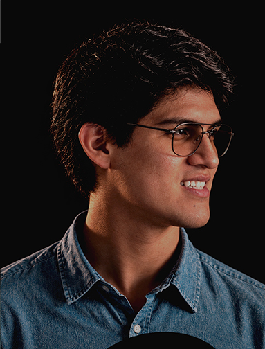

Ingeniero de Software Senior con 6 años de trayectoria coliderando sistemas distribuidos. Especializado en el ecosistema Java Full Stack enfocado en desarrollo web y móvil. Diseño aplicaciones empresariales en banca y seguros, potenciando plataformas e-commerce con enfoque UI/UX. Dominio práctico de arquitecturas modernas (Spring Boot, NestJS, FastAPI) e infraestructura cloud. Trabajo para eliminar fricción técnica, deuda operativa y entregar software altamente mantenible. Optimizo el ciclo de entrega mediante contenedores, cultura DevOps y flujos de IA.
Lidero el desarrollo integral de aplicaciones empresariales full-stack de alto rendimiento. Diseño microservicios avanzados en Java y Python junto a interfaces web modernas e intuitivas. Estructuro la gestión de estado y arquitecturas escalables enfocadas en una óptima UI/UX.
Construí microservicios core para programas de lealtad bajo Clean Architecture y DDD. Automaticé flujos distribuidos y pipelines de despliegue cloud mediante IaC con Terraform. Optimicé el rendimiento y observabilidad en producción sobre ecosistemas de Kubernetes.
Modernicé interfaces web avanzadas optimizando la experiencia de usuario y tiempos de respuesta. Refactoricé flujos críticos de venta e integraciones backend eliminando deudas técnicas complejas. Aseguré la entrega continua implementando pipelines automatizados de control de calidad.
Desarrollé servicios backend clave para la aplicación móvil oficial de ventas comerciales. Diseñé procesamientos asíncronos en la nube para desacoplar de forma segura la carga de documentos. Mejoré el rendimiento de base de datos Oracle y validación de servicios web.